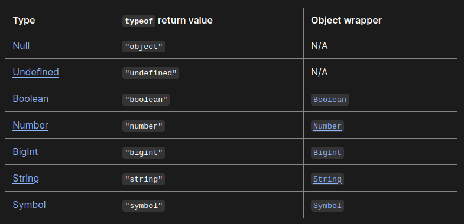
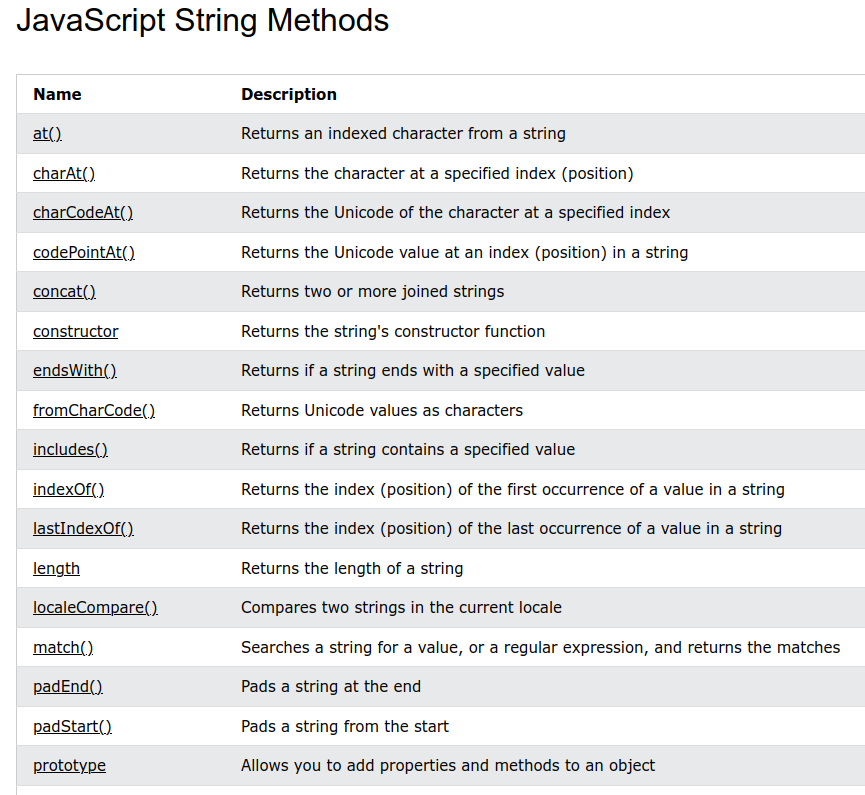
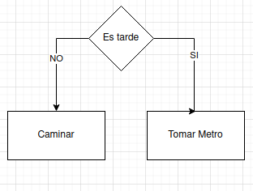
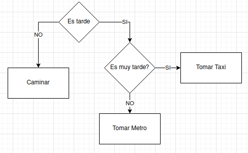
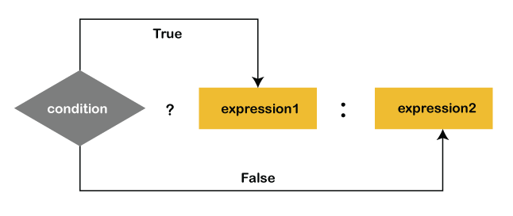
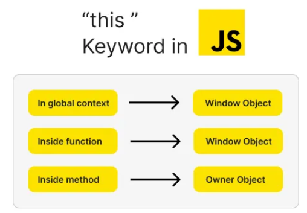

function saludar() {
console.log("Hola");
}Checkpoint 7
Cuestionario - Javascript
¿Qué diferencia a Javascript de cualquier otro lenguaje de programación?
Javascript se diferencia de otros lenguajes (como Java, Python, C, Ruby, etc.) en que es el único que puede ser interpretado por un web browser.
La razón de esto es historica, en 1995 fue cuando creado por la empresa Netscape que era predominante en el mercado queria un lenguaje que pareciera como Java. Aunque inicialmente se penso para manejar Front-End y Back-End, solo ha sido exitosa en el Front-End. Aun después de la desaparición del browser de Netscape, las compañias siguientes han continuado el uso de Javascript.
Referencias
¿Cuáles son algunos tipos de datos JS?
En JavaScript existen diferentes tipos de datos que se pueden clasificar principalmente en dos grandes categorías: tipos primitivos y tipos complejos (también llamados objetos). A continuación, se desarrolla cada uno de estos grupos junto con ejemplos y explicaciones de su funcionamiento.
Tipos Primitivos
Los tipos primitivos son aquellos que se almacenan y se gestionan por valor. Esto significa que cuando asignas o pasas un valor primitivo, se copia literalmente su valor en memoria. Algunas características clave de los tipos primitivos son:
Inmutabilidad: Una vez creado, el valor primitivo no puede cambiar; en lugar de modificarlo, se crea uno nuevo si se asigna un valor distinto.
Sin métodos propios: Aunque JavaScript permite acceder a métodos en tipos primitivos a través de un proceso llamado autoboxing (envoltura automática), en esencia estos valores no poseen métodos propios como los objetos.
Los tipos primitivos en JavaScript incluyen:
Number: Para representar tanto enteros como números con decimales. Sin embargo tiene limites:
Números flotantes: Puedes trabajar con números muy pequeños y muy grandes, tanto positivos como negativos, que tienen decimales.
Números enteros: Aunque puedes usar números enteros, JavaScript garantiza que sean precisos solo si están en el rango seguro, que es desde -(2^53 − 1) hasta 2^53 − 1. Si el número entero está fuera de este rango, ya no se representa con total precisión y se convierte en una aproximación de punto flotante.
Verificación: Puedes usar la función Number.isSafeInteger() para comprobar si un número entero está dentro de ese rango seguro.
String: Cadenas de caracteres.
Codificación y Posición: Los strings se codifican usando UTF-16, lo que significa que cada carácter se guarda como un valor numérico de 16 bits. Cada carácter ocupa una posición numerada, donde el primer carácter está en el índice 0, el siguiente en el 1, y así sucesivamente. La propiedad length de un string indica el número de unidades UTF-16, que puede no coincidir exactamente con la cantidad real de caracteres en todos los casos.
Inmutabilidad: Las cadenas son inmutables, lo que significa que una vez creada una cadena, no se puede modificar directamente. Si necesitas cambiarla, las operaciones como extraer una parte del texto (usando substring()) o unir dos cadenas (con el operador + o concat()) generan una nueva cadena sin alterar la original.
Boolean: Valores lógicos true y false. Usualmene usados en operaciones con condicionales.
Null: Representa la ausencia intencional de cualquier valor u objeto.
Undefined: Indica que una variable ha sido declarada pero aún no se le ha asignado ningún valor.
Symbol: Introducido en ES6, se utiliza para crear identificadores únicos para propiedades de objetos.
BigInt: Introducido en versiones más recientes (ES2020), permite trabajar con números enteros de gran magnitud que superan el límite del tipo Number.
En la siguiente tabla se puede resumir los tipos primitivos, los valores que regresa y correspondiente clase o tipo de objeto que lo contiene:

Tipos Complejos (Objetos)
Los tipos complejos, o objetos, se gestionan por referencia. Esto significa que cuando asignas o pasas un objeto, lo que se copia es la referencia a la ubicación en memoria donde se encuentra ese objeto. Algunas características de los objetos son:
Mutabilidad: A diferencia de los primitivos, los objetos pueden modificarse después de su creación. Por ejemplo, puedes añadir, modificar o eliminar propiedades.
Colección de propiedades y métodos: Un objeto puede contener datos (propiedades) y funcionalidades (métodos).
Herencia prototípica: JavaScript utiliza prototipos para heredar propiedades y métodos entre objetos, lo que permite crear estructuras de datos más complejas y reutilizables.
Dentro de la categoría de objetos se incluyen:
Objetos literales: Se definen directamente usando pares de clave valor y permite almacenar diferentes atributos relacionados de manera flexible, por ejemplo,
let persona = { nombre: "Ana", edad: 28 };Arrays: Son objetos especializados para almacenar colecciones ordenadas de datos,
let numeros = [1, 2, 3, 4];Funciones: En JavaScript, las funciones se consideran objetos de primera clase, lo que significa que pueden asignarse a variables, pasarse como argumentos o devolverse desde otras funciones,
Otros objetos: Como Date, RegExp, Map, Set, entre otros, que proporcionan funcionalidades específicas para manejar fechas, expresiones regulares y colecciones de valores.
Referencia:
https://developer.mozilla.org/en-US/docs/Web/JavaScript/Guide/Data_structures
¿Cuáles son las tres funciones de String en JS?
En JS, los objeto de clase string representan texto y existen diferentes métodos que se resumen en la siguiente imagen.

Dentro de estos metodos encontramos funcionalidades que nos permiten manipular strings que son muy utiles en la gestión de datos.
Como ejemplo de lo múltiples metodos, vamos a asumir que hemos obtenido un texto en mínuscula pero necesitamos hacer la primera letra del titulo en mayúscula:
let titulo = "hola pequeños gatos";
let tituloCapitalizado = titulo.charAt(0).toUpperCase() + titulo.slice(1);
console.log(tituloCapitalizado);Ahora imaginamos que queremos hacer un split de texto, extraer el segundo objeto y removemos espacios en blanco usando trim().
let texto = "manzana, naranja, banana";
// Dividir el texto en un array usando la coma (",") como separador
let partes = texto.split(",");
let segundoObjeto = partes[1].trim();Referencias
https://www.w3schools.com/jsref/jsref_obj_string.asp
https://developer.mozilla.org/en-US/docs/Web/JavaScript/Reference/Global_Objects/String
¿Qué es un condicional?
En JS, una operación condicional, como el nombre indica, permite tener diferentes caminos a tomar (bloques de código a ejecutar) en dependencia de si una condición o condiciones se cumplen.
Esto se puede entender con un ejemplo cotidiano. Digamos que vamos caminando al trabajo de manera regular pero si es tarde tenemos que tomar el metro.

Como vemos, el concepto de condicional es fácil de entender y lo usamos en nuestra vida cotidiana.
Ahora en JS, la sintaxis seria:
let tiempoParaTrabajar = 35;
let limiteCaminar = 30;
let limiteMetro = 15;
if (tiempoParaTrabajar > limiteCaminar) {
console.log(`Vamos caminando!`);
} else {
console.log(`Vamos en Metro que es tarde!`);
}Ahora complicamos un poco más la lógica para mostrar el caso de una condicional dentro de una condicional. Por ejemplo, si fuera tarde tomamos el metro pero si es muy tarde vamos a tomar un taxi.

let tiempoParaTrabajar = 35;
let limiteCaminar = 30;
let limiteMetro = 15;
if (tiempoParaTrabajar > limiteCaminar) {
console.log(`Vamos caminando!`);
} else {
if (tiempoParaTrabajar > limiteMetro){
console.log(`Vamos en Metro que es tarde!`);
} else {
console.log(`Vamos en Taxi que es muy tarde!`);
}
}En caso de que hubieran multiplies condiciones a probar usamos sintaxis: “if…else if…else”.
if (condition1)
statement1
else if (condition2)
statement2
else if (condition3)
statement3
// …
else
statementNVeamos un ejemplo donde dependencia de la edad pagamos un precio diferente en el cine
let edad = 15;
let precioBase = 10;
let precioFinal;
// Aplicar descuento por edad
if (edad < 12) {
precioFinal = precioBase * 0.5;
} else if (edad >= 12 && edad < 18) {
precioFinal = precioBase * 0.75;
} else if (edad >= 65) {
precioFinal = precioBase * 0.7;
} else {
precioFinal = precioBase;
}
//console.log("El precio de la entrada es: $" + precioFinal);Referencias
https://developer.mozilla.org/en-US/docs/Web/JavaScript/Reference/Statements/if...else
https://www.w3schools.com/js/js_if_else.asp ## ¿Qué es un operador ternario?

El operador condicional (ternario) es el único operador de JavaScript que toma tres operandos: una condición seguida de un signo de interrogación (?), luego una expresión que se ejecuta si la condición es verdadera y, a continuación, dos puntos (:) seguidos de la expresión que se ejecuta si la condición es falsa. Este operador se utiliza frecuentemente como una alternativa a la sentencia if…else.
condicion ? ExpresionEjecutaSiVerdadero : ExpresionEjecutaSiFalsoPor ejemplo, imaginamos que hemos decidido comprar lecha cuando hay menos de 5 litros en casa (nos encanta hacer yogurt :D).
Primero veamos como seria usando condicional tipo if … else :
if (lecheLitros >= 5) {
console.log(`No comprar leche!`);
} else {
console.log(`Comprar leche!`);
}Ahora veamos un seudo código de operación ternaria:
HayMenosQueUmbral ? ComprarLeche : NoComprarLecheEn código seria algo como:
const umbral = 5;
let lecheLitros = 26;
const comprarLeche = lecheLitros >= umbral ? "No comprar leche" : "Comprar Leche";
console.log(comprarLeche); // "No comprar leche"Como vemos, la operación ternaria nos ofrece una manera de simplificar el código y la lectura en ciertos casos donde las condiciones son simples.
Referencias
https://developer.mozilla.org/en-US/docs/Web/JavaScript/Reference/Operators/Conditional_operator
https://www.w3schools.com/java/java_conditions_shorthand.asp
¿Cuál es la diferencia entre una declaración de función y una expresión de función?
En JS, se pueden definir funciones de usando declaración de función y expresión de función. Vamos a ver ejemplos y diferencias.
Declaración de función
La función se define usando la palabra clave function. Se le asigna un nombre y se pueden llamar y reusar en varios sitios.
Por ejemplo, creamos una función que suma dos números de la siguiente manera:
function sumarNumeros(num1,num2){
return num1 + num2;
}Hoisting. Las declaraciones de funciones se elevan al inicio del contexto lo que permite llamar a la función antes de escribir la declaración en el código.
sumarNumeros(1,3);// 4
function sumarNumeros(num1,num2){
return num1 + num2;
}Expresión de función
En este caso, a una variable se le asigna la función que puede ser anónima o tener un nombre interno. Por ejemplo, en la siguiente expresión creamos la variable getRectArea que contiene una función anónima:
const getRectArea = function(width, height) {
return width * height;
};
console.log(getRectArea(3, 4));
// Expected output: 12Un ejemplo de función con nombre podria ser:
let funcionConNombre = function miFuncion() {
console.log("Esta es una function expression con nombre.");
};
funcionConNombre(); //
// Expected output: Esta es una function expression con nombreNo hosting. Lo que quiere decir que no se eleva y se tiene usar después de la asignación.
Un uso común de expresiones de función es cuando se requiere una función como valor como cuando se usan callbacks.
Callbacks son funciones que se pasan como argumento a otra función y se ejecuta después de que ocurra un evento o se completa un proceso. Este tipo de mecánismos se usa en operaciones asíncronas como manejar eventos o esperar a una respuesta de API, ya que permite que el código continua su ejecución sin bloquearse. Por ejemplo, en en sieguiente código se espera a que ocurra un evento (click) y cuando esto ocurre, se imprime en consola un mensaje:
button.addEventListener("click", function (event) {
console.log("button is clicked!");
});Es importante observar que la secuencia de ejecución con callbacks no es la secuencia en la que estan definidas pero más bien en la secuencia en la que son llamadas.Esto permite ir llamando a funciones de manera muy dinámicas y en respuesta a las acciones de lo que podría ser las necesidades de un usuario en una web app.
Referencias
https://www.w3schools.com/js/js_function_definition.asp
https://developer.mozilla.org/en-US/docs/Web/JavaScript/Reference/Operators/function
¿Qué es la palabra clave “this” en JS?

This es una palabra clave utilizada dentro de funciones y clases. Hace referencia al objeto en cuestión. En el caso de que estamos creando una función, la palabra “this” se usa para representar o llamar al objeto que dicha función esta modificando. El objeto al que se refiere varia en dependencia de cómo y donde se llama a this.
Vamos a ver algunos ejemplos para entender mejor como usar this:
- Al llamar fuera de función, se refire al objeto de ventana global.
console.log('this alone', this); // [object Window]- Al llamar dentro de un objeto, nos referimos al objeto.
const person = {
firstName: "John",
lastName : "Doe",
id : 5566,
getThis : function() {
return this;
}
};
console.log('this in object method', person.getThis());Y de la misma manera, podemos usar this para llamar a otras propiedades del objeto
const person = {
firstName: "John",
lastName : "Doe",
id : 5566,
getFullName : function() {
return this.name + ' ' + this.lastName;
}
};
console.log('this in object method', person.getFullName());Hay otras posibles referencias de “this” que se resumen aqui:
- En un método de un objeto, this se refiere al objeto.
- Por sí solo, this se refiere al objeto global.
- En una función, this se refiere al objeto global.
- En una función en modo estricto, this es undefined.
- En un evento, this se refiere al elemento que recibió el evento.
- Métodos como call(), apply() y bind() pueden asignar this a cualquier objeto.
Referencias
https://www.freecodecamp.org/espanol/news/como-usar-la-palabra-clave-this-en-javascript/
https://keepcoding.io/blog/que-es-this-en-javascript/
https://www.w3schools.com/js/js_this.asp
https://medium.com/@leoanimesh/javascript-this-keyword-explained-a62f3676fca1
Ejercicio
// ejercicio.js
/*crea funcion que toma 4 argumentos, suma los 2 primeros y multiplica los 2 siguientes
Si el número creado es mayor que 50, la consola registra "¡El número es mayor que 50!".
Si es más pequeño, la consola registra "¡El número es menor que 50!"
*/
function myFunctionSumaMultiplica(num1, num2,num3,num4) {
// Verificar que se hayan pasado exactamente 4 argumentos
if (arguments.length !== 4) {
console.log("Error de cantidad: se deben pasar 4 argumentos.");
return;
}
// Verificar que todos sean números
if (
typeof num1 !== 'number' ||
typeof num2 !== 'number' ||
typeof num3 !== 'number' ||
typeof num4 !== 'number'
) {
console.log("Error de tipo: todos los 4 argumentos deben ser números.");
return;
}
let suma1 = num1 + num2;
let suma2 = num3 + num4;
let producto = suma1 * suma2;
if (producto > 50) {
console.log(`¡El número ${producto} es mayor que 50!`);
}
else if (producto === 50) {
console.log(`¡El número ${producto} es igual a 50!`);
}
else {
console.log(`¡El número ${producto} es menor que 50!`);
}
}
//llama a la funcion y muestra el resultado en consola
//var resultado = myFunctionSumaMultiplica(2.5, 3, 4, 2);
// ejemplo con error de tipo
//var resultado2 = myFunctionSumaMultiplica(2.5, 3, "4", 2);
// ejemplo con error de cantidad de argumentos
//var resultado3 = myFunctionSumaMultiplica(2.5, 3, 4);